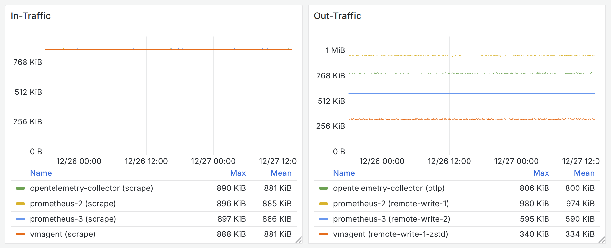
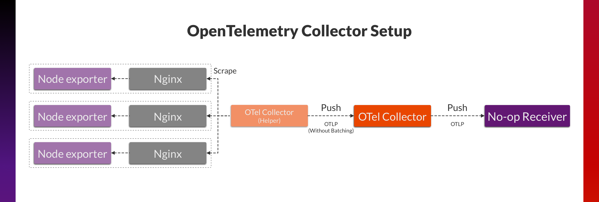

OpenTelemetry, Prometheus, and More: 谁是采集监控指标的最佳选择?
Prometheus and Remote Write
Prometheus 是云原生指标监控领域的事实标准。它的工作模式很简单：应用提供 /metrics HTTP API，以文本格式暴露指标数据；Prometheus 访问这些 API，将数据采集，然后提供查询 API 进行展示。
虽然 Prometheus 的生态发展出了很丰富的组件，它的核心 Prometheus Server（下称 Prometheus）仍然保持 All-in-One 的设计，提供一个可执行文件，无需任何依赖即可运行，这使得它的安装和部署更加简单。
但是，这也使得 Prometheus 不易扩展。想象一下，一开始的时候，你在一台 2 CPU，4GiB 内存的机器上运行 Prometheus，用它来监控 100 个应用程序，这很容易。很快你需要用它监控 10000 个、100000 个应用程序，Prometheus 需要更多的机器资源，但是单台机器的配置总是有限的；另外，这些应用可能部署于不同的集群，不同的可用区，用单个 Prometheus 来四处收集数据并不高效。
所以，Prometheus 也提供了两个重要功能：
- Remote Write：将指标数据发送给远端存储，例如 Thanos，Cortex，Mimir 和 VictoriaMetrics。
- Agent Mode：省略查询、告警、本地存储功能，降低 Prometheus 仅用作数据采集 Agent 时的成本。
有了这些功能，面对大量应用时，监控架构可能是如下图这样：
OpenTelemetry and OTLP
2019 年，OpenTelemetry 诞生，它提供了统一、开源的可观测性标准，避免用户因依赖特定供应商或者协议而难以更换、迁移到新的技术服务上。
OpenTelemetry 定义了一系列的概念，例如 Signal，即一类 Telemetry，包括 Tracing Signal、Metric Signal、Log Signal 等。而在不同组件间传输这些 Telemetry 数据需要遵循的协议就是 OpenTelemetry 协议（OpenTelemetry Protocol，OTLP）。
Prometheus and OpenTelemetry
那么当谈及 Metrics 时，似乎很容易将 OpenTelemetry 与 Prometheus 进行类比：
| Prometheus | OpenTelemetry | |
|---|---|---|
| Data Model | Metrics | Metrics Signal |
| Protocol of Data Propagation | Remote Write | OTLP |
不知道大家是否有过这样的疑问：Prometheus 既然已经是云原生指标监控领域的事实标准，大多数供应商、项目也支持它的 Data Model 和 Remote Write Protocol，那为什么要考虑 OpenTelemetry 呢？
假设你已经在使用 Kubernetes，这个生态里的许多组件都是以 HTTP API 的形式暴露 Prometheus 文本格式的指标数据：
当这些基础设施都不可改变的时候，前面的问题就变成了：抓取指标数据并将他发送给 Remote Storage，Prometheus 还是 OpenTelemetry 更好？
不妨来做一下性能测试。
Benchmark
Setup
我们分别运行 Prometheus（Agent Mode）、OpenTelemetry Collector 和 vmagent 抓取 1200 个分散在 3 个 Region 的 Node exporter，并将数据以不同协议发送给 Receiver。这个 Receiver 会对数据进行 Decompress 和 Unmarshal，并且记录一些统计信息，但没有实际的数据持久化操作。
相关组件的信息如下：
| Version | Machine Type | vCPUs | Memory (GB) | Standard persistent disk | |
|---|---|---|---|---|---|
| Prometheus | 2.53.3 | e2-highcpu-2 | 2 | 2 | Standard persistent disk(HDD) |
| Prometheus | 3.0.1 | e2-highcpu-2 | 2 | 2 | Standard persistent disk(HDD) |
| OpenTelemetry Collector | v0.115.0 | e2-highcpu-2 | 2 | 2 | Standard persistent disk(HDD) |
| vmagent | v1.108.0 | e2-highcpu-2 | 2 | 2 | Standard persistent disk(HDD) |
| Node exporter | 1.8.2 | e2-micro | 2(0.25) | 1 | Standard persistent disk(HDD) |
| No-op Receiver | N/A | n2d-highcpu-4 | 4 | 4 | Balanced persistent disk(SSD) |
整体的 Benchmark 架构如下：
Result #1
首次 Benchmark 主要了解不同组件的资源使用情况，为后续测试提供参考基准。在运行了数天后，我们得到了一些监控数据。
看起来从 Prometheus 2.x 升级到 Prometheus 3.x 并不会给你额外的节约 CPU 和内存资源。它是测试组件中使用内存最多的，这可能与 WAL 的存在有关。OpenTelemetry Collector 如果用作数据采集的 Agent，CPU 开销似乎太高了，同时在没有 WAL 的情况下，内存的使用量也处在较高的水平。

网络流量的情况反映的是不同协议的数据传输效率。由于采集的是相同的目标，In-Traffic 是几乎一致的。而 Out-Traffic 告诉我们，Prometheus 3.x 使用的 Remote Write 2.0 相比 Remote Write 1.0 能节约 40% 的带宽，而 OpenTelemetry Collector 使用的 OTLP 似乎在这方面不太占优势。vmagent 使用的是 Remote Write 1.0，但是压缩算法从 Prometheus 规范中指定的 Snappy 变成了 zstd，这为它节约了大量的带宽。
在磁盘使用量方面，因为 Benchmark 并没有关注 Remote Storage 不可用时的情况，所以 OpenTelemetry Collector 和 vmagent 几乎都没有使用额外的存储空间。Prometheus 由于 WAL 的存在，尽管处于 Agent Mode，WAL 仍然需要正常写入以提供 Remote Write 支持。这些 WAL 数据每隔 2 小时清理，因此在磁盘用量的监控上图线呈现锯齿状。
在简单总结之后，我们发现了一些值得继续探讨的问题：
- 为什么 OpenTelemetry Collector 的 CPU 使用率远高于其它 Agent？
- vmagent 仅修改了 Remote Write 1.0 的压缩算法就能使带宽用量降低这么多，那 Remote Write 2.0 使用 zstd 压缩算法有用吗？
Profiling OpenTelemetry Collector
我们使用到的 OpenTelemetry Collector 配置非常简洁：
service:
pipelines:
metrics:
receivers: [prometheus]
processors: [batch]
exporters: [otlp]
所以问题无非出在 Prometheus Receiver 或 OTLP Exporter 上。
因此，我们通过增加 extensions: [pprof]，收集了它的 profile 样本。从中可以看出，OpenTelemetry Collector 在 Scrape 操作花费的时间较多，所以基本可以确定是 Prometheus Receiver 带来的开销。
考虑到抓取 Prometheus 文本格式的指标并不算是 OpenTelemetry Collector 的“本职工作”，这些性能上的瑕疵似乎可以理解。对它进行优化会是个很有趣的过程，但这不是本文讨论的重点。
假若未来各类基础设施（例如 Node exporter）可以提供 OTLP 支持，这个问题能否得到改善呢？ 我们重新设计了 OpenTelemetry Collector 的数据采集流程，考察其在 Push 模式下收集数据的资源使用情况。架构修改如下：

其中，OpenTelemetry Collector Helper 仍然使用 Prometheus Receiver 来主动采集 Node exporter 指标，移除 Batch Processor，然后借助 OTLP Exporter 将数据推送给 OpenTelemetry Collector。在这种场景下，被测的 OpenTelemetry Collector 收到请求速率大约为 40 req/s。
通过对比，我们发现这种工作模式下 OpenTelemetry Collector 的 CPU 使用率降低了 35%，内存使用率降低了 70%。
zstd: Silver Bullet?
在惊讶于 vmagent 定制版 Remote Write 1.0 的超低带宽使用量之余，我们尝试让 Remote Write 2.0 也与 zstd 进行结合。通过对 Prometheus 3.x 进行简单调整，我们观测到了如下的结果：

借助 zstd，Remote Write 2.0 的带宽使用降低了 30%。压缩算法的变更影响最大的是 CPU 使用率，但是在测试的负载下，CPU 使用率仅上升了 4%，并不明显。因此，有理由认为 zstd 对于关注带宽使用的用户（例如多云商部署，需要跨 Available Zone 传输数据）有不错的使用价值。
Result (Full)
现在，你还可以在 snapshots.raintank.io 上查看这份监控数据 Snapshot。
Conclusion
我们最初提出的问题是：Prometheus 既然已经是云原生指标监控领域的事实标准，大多数供应商、项目也支持它的 Data Model 和 Remote Write Protocol，那为什么要考虑 OpenTelemetry 呢？
通过前文的比较，我们认为，在大部分 Exporter（特别是 Istio、kube-state-metrics 这种数据量庞大的 Exporter）能提供完善的 OTLP 支持之前，使用 OpenTelemetry 是需要不小的代价的，在数据采集、转换所需要的 CPU 资源上体现尤为明显。
而关注到 Prometheus 生态内部，Prometheus 3.x 的全新 Remote Write 协议直接减少了 40% 的带宽使用，若进一步加入 zstd 压缩算法的选项，用户甚至可以得到一张 4 折的带宽账单。但其他资源使用上，因为 Prometheus 2.x 仍在继续开发迭代，所以也会收到性能优化 Patch，相比之下，两个大版本间的资源使用差距似乎不太明显。
而 vmagent 作为众多比较对象中较为特殊的存在，相比 OpenTelemetry Collector 和 Prometheus 3.x，它以能以极低的 CPU（相比前两者降低 70% / 39%）和内存（相比前两者降低 64% / 67%）开销直接采集 Prometheus 文本格式的 Exporter。同时，借助 Remote Write 1.0 及 zstd 压缩算法的组合，它又能最小化带宽需求，即使对比 Remote Write 2.0 仍能节约 46% 的网络带宽，算得上是用户的极致性价比之选。
随着 OpenTelemetry 和 Prometheus 不断推动新的标准，未来若有能更好利用 OTLP 和 Remote Write 2.0 标准的 Exporter，或许新的协议会体现出更多的优势。但是就目前而言，用户似乎仍有理由坚守在现存的版本，毕竟，伴随每次迁移升级的不止有收益，也有很多不可忽视的成本。